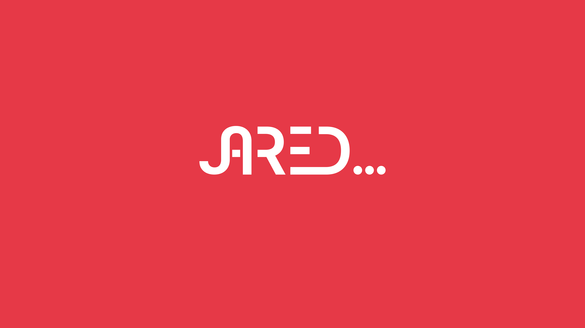
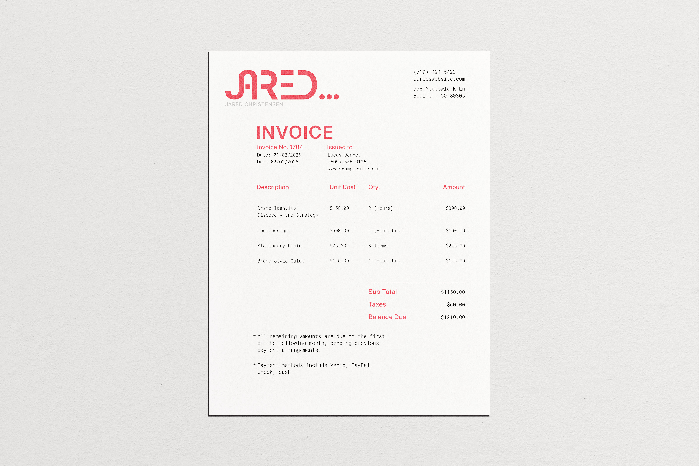
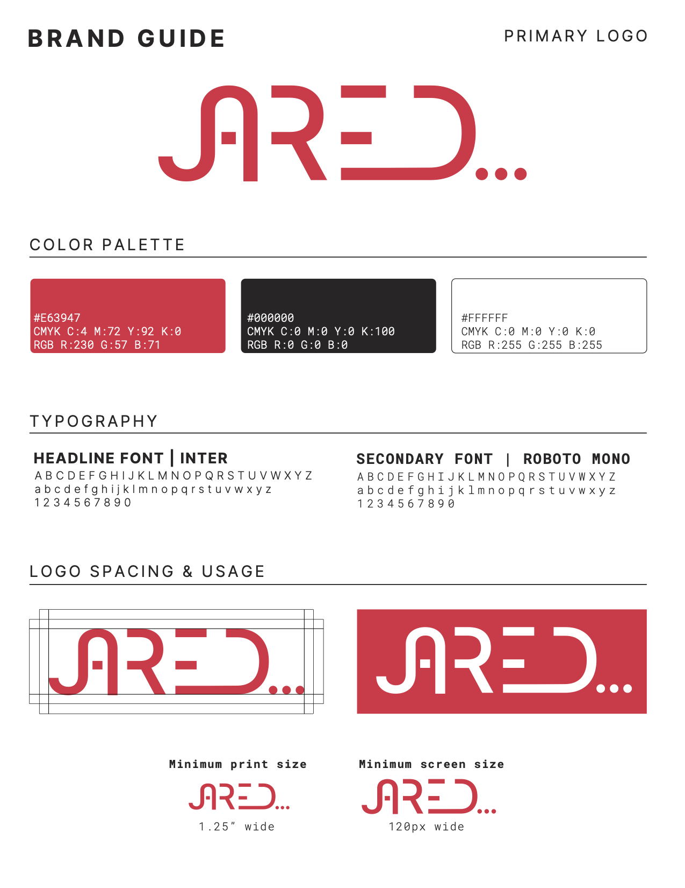

Collateral // 01
Dual-Sided Business Cards
High-contrast dual-sided execution featuring a bold Marathon Red textured front paired with a clean monospace hierarchy and structured alignment on the reverse.
 Index
Index

Personal Brand System & Stationery Suite · 2026
A personal brand identity defined by simplicity and a forward-looking perspective. The custom wordmark incorporates integrated ellipses as a visual symbol for "to be continued"—signaling a designer who is constantly building what comes next.
The stationery suite translates this digital-forward mark into tangible print collateral. Using high-contrast Marathon Red, rigid grid structures, and tactile unboxing reveals, standard documents become engaging brand touchpoints.

High-contrast dual-sided execution featuring a bold Marathon Red textured front paired with a clean monospace hierarchy and structured alignment on the reverse.
Engineered around the physical interaction of opening mail. The red inner flap conceals the brand phrase "plenty more in the works..." acting as a conceptual seal before reading.



